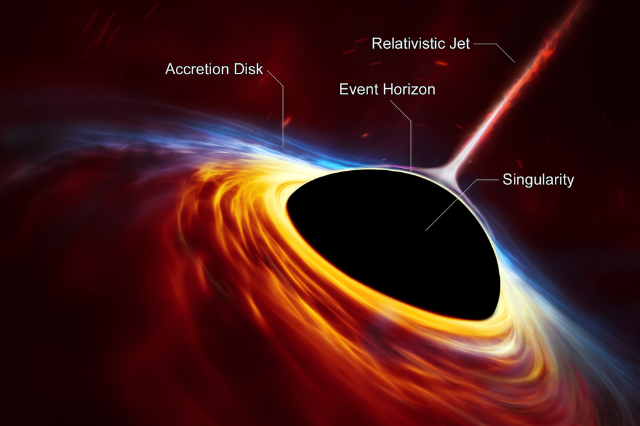
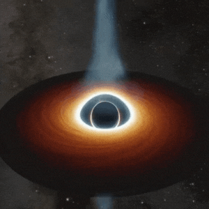
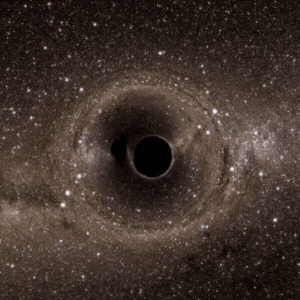
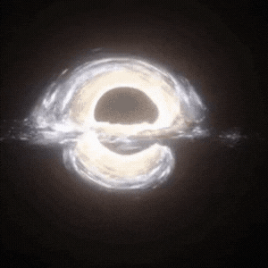
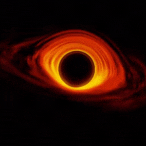

Black-Hole Ilustration
Heyy mungkin anda sudah tau...Itulah Balck-Hole yang mungkin banyak orang belum mengetahuinnya tapi itulah alam semesta suatu hal yang mungkin kita tidak sangka itu ada diluar alam semesta ini, This Sains Theory Of Everything.
Ayo Cari tahu tentang Black-Hole

Albert Einstein tidak secara langsung mengembangkan teori tentang Black-Hole namun Teori relativitas umum yang dikembangkan oleh Albert Einstein membantu menjelaskan fenomena lubang hitam. Menurut teori ini, massa dan energi tidak bisa diciptakan atau dihancurkan, tetapi hanya dapat diubah bentuknya. Ketika bintang yang sangat besar mati dan runtuh pada dirinya sendiri karena gravitasi yang sangat kuat, ia terus menarik materi dan energi lainnya ke dalamnya, termasuk cahaya, sehingga tidak ada apa pun yang bisa melarikan diri dari lubang hitam.
Lalu setelah dari teori Albert Einstein Hawking pun menyimpulkannya Menurut teori Hawking, black hole adalah objek kosmik yang sangat padat dengan massa yang sangat besar sehingga gaya gravitasi yang dihasilkan sangat kuat. Kekuatan gravitasi ini sangat kuat sehingga bahkan cahaya tidak bisa melarikan diri dari gravitasi black hole, sehingga black hole sering dijuluki "lubang hitam" karena sifatnya yang menyerap segala sesuatu tanpa adanya pantulan.
Beberapa foto-foto Ilustrations Sains tentang Black-Hole [Semua aset foto dari Google]
🪐Penuh keajaiban 🪐


~ ilustrations Black-Hole ~
[ Details ]

~ ilustrations Black-Hole ~
[ Details ]

~ ilustrations Black-Hole ~
[ Details ]

~ ilustrations Black-Hole ~
[ Details ]
Mari mengetahui Sejarah atau cerita singkat tentang


Ayoo kirim pesan dan juga masukan tentang